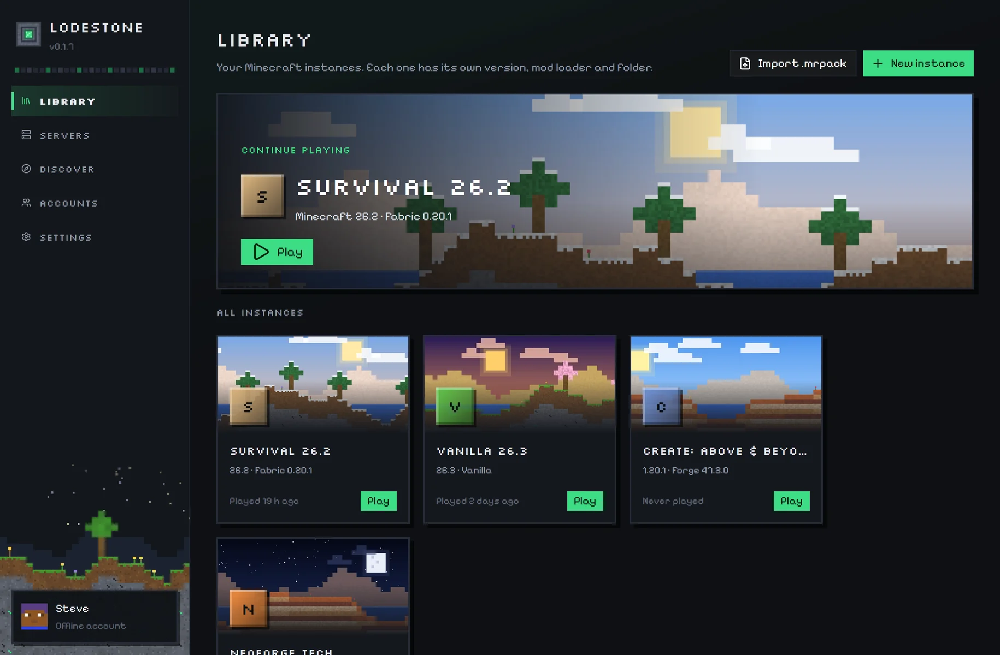

Free & open-source Minecraft launcher
LODESTONE
Play any version of Minecraft, add mods from Modrinth and host your own server, from one small, fast app written in Rust.

Features
Everything a launcher should do
Lodestone handles game files, Java and mod loaders for you, so a new modded instance is a name and two clicks away.
Any version
Every release and snapshot, back to the oldest alphas, with the right Java downloaded for you. Each instance gets its own folder.
Every mod loader
Fabric, Quilt, Forge and NeoForge for both clients and servers. Pick a loader version or take the newest.
Modrinth built in
Search mods, resource packs and shaders. Required dependencies install too, and you only see versions that fit your instance.
Modpacks
Install any Modrinth modpack or a .mrpack file. Switch a pack to another version later and keep your worlds.
Host a server
Vanilla or modded servers with a live console, commands, and a ready-to-copy LAN address for your friends.
One-click updates
New releases show up in the sidebar. Click Update and Lodestone replaces itself and relaunches, keeping all your data.
Native and light
A single Rust app drawn on the GPU with GPUI. No Electron, no browser engine, no background services.
Made to look at
Pixel fonts, blocky panels and a generated landscape for every instance. Set your own icon, or let modpacks use theirs.
Offline accounts
Play with any username in offline mode, on your own worlds, on LAN and on offline-mode servers.
Screenshots
A look inside
Real screens from Lodestone, running Minecraft 26.2.
Download
Get Lodestone
Every button downloads the file straight from the newest GitHub release. It's free, and nothing else gets installed.
Install with one command
Detects your system, downloads the right file and installs it. No security warnings to click through.
curl -fsSL https://p1e2r.github.io/lodestone-launcher/install.sh | shiex ((New-Object Net.WebClient).DownloadString('https://p1e2r.github.io/lodestone-launcher/install.ps1'))Windows
Windows 10 and 11, 64-bit
iex ((New-Object Net.WebClient).DownloadString('https://p1e2r.github.io/lodestone-launcher/install.ps1'))No admin rights needed. Windows install guide
macOS · Apple Silicon
M1, M2, M3, M4 and newer
curl -fsSL https://p1e2r.github.io/lodestone-launcher/install.sh | shThe .dmg needs one extra Terminal step; the command doesn't. macOS install guide
macOS · Intel
Macs with an Intel processor
curl -fsSL https://p1e2r.github.io/lodestone-launcher/install.sh | shNot sure which Mac you have? Check your chip
Linux
x86_64, X11 or Wayland
curl -fsSL https://p1e2r.github.io/lodestone-launcher/install.sh | shNeeds a Vulkan graphics driver. Linux install guide
Looking for an older version or the changelog? See all releases on GitHub.
Install
Set it up in a minute
Pick your system for the short version, or read the full install guides. To learn how everything works, see the Wiki.
Fastest: one command
Open PowerShell (Start → type PowerShell), paste, press Enter.
iex ((New-Object Net.WebClient).DownloadString('https://p1e2r.github.io/lodestone-launcher/install.ps1'))Download the installer
Get
Lodestone-windows-x64-setup.exeand open it.Get past SmartScreen
Lodestone isn't code-signed yet, so Windows may show “Windows protected your PC”. Click More info, then Run anyway.
Finish the installer
It installs for your user only, in
%LOCALAPPDATA%\Programs\Lodestone, so no admin prompt appears. Find Lodestone in the Start Menu afterwards.Make an instance and play
Add an offline account with any username, click New instance, choose a version and loader, then press Play.
Full Windows guide → Updating, uninstalling and troubleshooting.
Prefer no installer? Download Lodestone-windows-x64.exe instead and run it from anywhere. It copies itself to the same programs folder and adds the Start Menu entry for you. Uninstall from Settings → Apps.
Fastest: one command
Open Terminal (⌘ Space, type Terminal), paste, press Return. It picks Apple Silicon or Intel for you and macOS won't block it.
curl -fsSL https://p1e2r.github.io/lodestone-launcher/install.sh | shDownload the right disk image
Apple Silicon (.dmg) for M-series Macs, or Intel (.dmg) for older ones.
Drag Lodestone into Applications
Open the .dmg and drag the Lodestone icon onto the Applications folder.
Allow it to open
Lodestone isn't notarized by Apple yet, so macOS blocks it the first time. Paste this into Terminal once:
xattr -dr com.apple.quarantine /Applications/Lodestone.appThis removes the “downloaded from the internet” flag that makes macOS call the app damaged. The one-command install skips it.
Open Lodestone and play
Launch it from Applications or Spotlight. Add an offline account, make an instance, and press Play.
Full macOS guide → Apple Silicon and Intel, no-Terminal option, troubleshooting.
Opened it straight from Downloads? Lodestone moves itself to ~/Applications and relaunches, so Spotlight and Launchpad can find it.
Fastest: one command
Installs Lodestone, adds it to your app menu and checks the graphics libraries.
curl -fsSL https://p1e2r.github.io/lodestone-launcher/install.sh | shDownload and unpack
curl -LO https://github.com/p1e2r/lodestone-launcher/releases/latest/download/Lodestone-linux-x64.tar.gzmkdir -p ~/.local/opt/lodestone && tar -xzf Lodestone-linux-x64.tar.gz -C ~/.local/opt/lodestoneInstall the graphics libraries
Lodestone draws with Vulkan. On Debian or Ubuntu:
sudo apt install libxkbcommon-x11-0 libvulkan1 mesa-vulkan-driversMost desktops already have these. NVIDIA users need the proprietary driver.
Run it
~/.local/opt/lodestone/lodestoneUpdates from the sidebar replace this file in place.
Full Linux guide → Fedora and Arch packages, app menu entry, troubleshooting.
FAQ
Questions
Is Lodestone free?
Yes. It's free and open source under the MIT license. The full source code is on GitHub.
Do I need a Microsoft account?
No. Lodestone uses offline accounts: pick any username and play singleplayer, on LAN, or on servers that run in offline mode, including ones you host with Lodestone. Servers that check Microsoft accounts (online mode) won't let offline players join.
Where are my worlds and instances stored?
In your user's app-data folder, separate from the app itself, so updating or reinstalling never touches them:
Windows: %APPDATA%\p1e2r\Lodestone\data
macOS: ~/Library/Application Support/dev.p1e2r.Lodestone
Linux: ~/.local/share/lodestone
Each instance's page also has an Open folder button.
How do updates work?
Lodestone checks GitHub for a new release when it starts. When one is out, an Update card appears in the sidebar; click it and Lodestone downloads the new version, replaces itself and relaunches. You can also check from Settings → Updates.
Can I use my existing mods and modpacks?
Yes. Drop .jar files onto an instance's Mods tab, import any .mrpack file from the Library, or install straight from Modrinth in Discover. Files from Modrinth are recognized automatically, so they show as installed and can switch versions.
Why does my computer warn me when I open it?
The builds aren't code-signed by Microsoft or notarized by Apple yet, which costs money each year. The warning is generic for unsigned apps. The one-command install avoids the warnings entirely, and every release is built from the public source by GitHub Actions.
How do I uninstall it?
Windows: Settings → Apps → Lodestone → Uninstall. macOS: drag Lodestone from Applications to the Trash. Linux: delete the folder you unpacked. To remove your instances and worlds too, delete the data folder listed above.
Is this an official Minecraft product?
No. Lodestone is an independent project and isn't approved by or associated with Mojang or Microsoft. Modrinth content is provided by Modrinth.
Open source
Built in the open
Lodestone is written in Rust on top of GPUI, the GPU-accelerated UI framework from the Zed editor. Bug reports, ideas and pull requests are welcome.